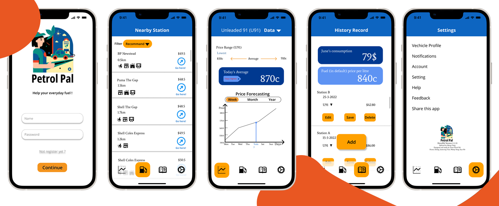

Petrol Pal
PatrolPal has four fundamental functions: Historical fuel price data, a handy fuel log and an intelligently sorted list of petrol stations, and innovative fuel price forecasting based on historical fuel prices and price fluctuation research-based algorithms.
PatrolPal is designed to meet all the needs of most people during the fueling process.
Tool used: Figma, Miro
What I did: UI design, User Experience research, design, test & evaluation
Duration: 7 April - 13 June 2022 as part of Course Human-Computer Interaction at UQ
*Due to the COVID-19 lockdown, the project was completed in a remote mode. Try the prototype

Background Research
- Literature Review
- Survey(53 participants were covered) & Interview(4 participants were covered)
- Existing Systems Study
Research Method
The price of gasoline is undergoing a global change. The change is being accelerated by changing trends
in
the worldwide economy and the volatile situation the producing countries face.
In addition to the macroscopic view of the potential impact of crude oil on the national economy, this
is even more relevant to the interests of every citizen. Within Australia, for example, driving is still
an utterly irreplaceable mode of transport for adult citizens. The research statistics showed that up to 7.4% of household income is spent on gasoline consumption in the
lowest-income
groups and as low
as 2.2% in higher-income groups (Byrne, D. P., Nah, J. S., & Xue, P. 2018). Thus, reducing spending on
petrol could mean
significant savings for poorer households.
Meanwhile, other researchers found that an increase of gasoline prices standard
deviation leads
to a decrease in subjective well-being (SWB) of 0.0157-0.0245 standard deviations (Prakash,
K.,
Awaworyi Churchill, S., & Smyth, R. 2020). Therefore it is socially and spiritually significant how to
help
users save money on fuel through technical means
without affecting objective fuel prices.
Researchers derived the public's level of concern about the real-time fuel prices side-by-side by
counting the magnitude of the change in traffic flow in the morning and evening rush hours. And
the fact that people may prefer to take public transportation during the high gas prices period (Burke,
P.
J., & Zhang, T. 2020). These
truths and our surveys show that people are pretty sensitive and concerned about the real-time
changes in gas
prices.
UX design: System Concept
Develop a solution to help users save money on fuel, relieve their financial stress
and
improve their consumer happiness.
Our solution is an application based on multi-dimensional information. The nearby gas
stations are sorted algorithmically by parameters such as fuel price, distance and rating in the form of
a list for users to choose from. The secondary page of the list, i.e. the display page, is used as a
platform for merchants to build up their business profiles.
The application integrates a gasoline logbook function to facilitate users' expense management and reconciliation.
The application also provides a display function for historical changes in gasoline prices while having an innovation: an algorithm forecasts future fuel price trends to facilitate users' fuel consumption decisions.
The application integrates a gasoline logbook function to facilitate users' expense management and reconciliation.
The application also provides a display function for historical changes in gasoline prices while having an innovation: an algorithm forecasts future fuel price trends to facilitate users' fuel consumption decisions.
Mobile
Instructing
-Card: The card metaphor categorizes complicated information into a block
of information, which is easy for users to read and operate.
-Logbook: The logbook metaphor gives users a sense of bookkeeping and guides them through the process.
-Stock: Use a line chart to express the stock market metaphor to make users perceive the volatility of fuel prices and to boost their financial cognition for fuel consumption.
-Logbook: The logbook metaphor gives users a sense of bookkeeping and guides them through the process.
-Stock: Use a line chart to express the stock market metaphor to make users perceive the volatility of fuel prices and to boost their financial cognition for fuel consumption.
Target Users
According to our research, our target users are car owners aged 18-50 who need to refuel, are also sensitive to fuel prices and want to find ways to save money. However, our user group can be all-age car owners interested in using the app or family members of car owners.Persona & Storyboard
Low-fidelity Prototype
Mid-fidelity Prototype-Ver.1
After completing the low-fidelity prototype, we developed our first medium-fidelity prototype after conducting a small-scale user experience evaluation and satisfaction survey.
Design Guideline
We designed the guideline to ensure that the principles of intuitiveness, learnability, efficiency and consistency were reflected in our prototype design.
For the colour selection, we chose blue and orange, two
colours commonly used in gas stations worldwide, to form the visual identity of our application and
construct a gas station metaphor.
The interactive elements are represented in a brighter orange to make it easier for users to operate.
The UI frequently uses rounded corners to neutralize the clashing sense of orange and make the visual
identity
user-friendly.
We also conducted readability tests to ensure the readability of the font.
Evaluation
For one round of evaluation of the mid-fidelity prototype, we prepared two sets of evaluation methods: an expert-based, qualitative Heuristic Evaluation and a user-based, quantitative Time on Task .
We prepared plans and protocols for both methods before the evaluation. The data was recorded following
the
plan during the process. We obtained the participation of five expert users and five general users
during
the evaluation process.
Here are the data charts.
However, the expert-based heuristic evaluation results show that the application still has usability
problems that are against the Usability Heuristics principle.
.
Mid-fidelity Prototype-Ver.2Final
After reflecting on the results, We developed the second also final version medium-fidelity prototype of this project.  Try the prototype
The above is the design and development process of the Petrol Pal, welcome to click the links to
experience the prototype, or please feel free to browse my other works :)
Reference
Byrne, D. P., Nah, J. S., & Xue, P. (2018). Australia Has the World’s Best Petrol Price Data: FuelWatch and FuelCheck. The Australian Economic Review, 51(4), 564–577. 10.1111/1467-8462.12302
Prakash, K., Awaworyi Churchill, S., & Smyth, R. (2020). Petrol prices and subjective
wellbeing. Energy Economics, 90, 104867. https://doi.org/10.1016/j.eneco.2020.104867
Burke, P. J., & Zhang, T. (2020). The Effect of Fuel Prices on Traffic Flows: Evidence from
New South Wales. SSRN Electronic Journal. https://doi.org/10.2139/ssrn.3707317
Fuel Map Australia is a trademark of WikiCamps pty ltd. ©2015 WIKICAMPS PTY LTD. ALL RIGHTS RESERVED.
FuelCheck is intellectual property of NSW Department of Customer Service. ©NSW Department of Customer
Service ALL RIGHTS RESERVED.